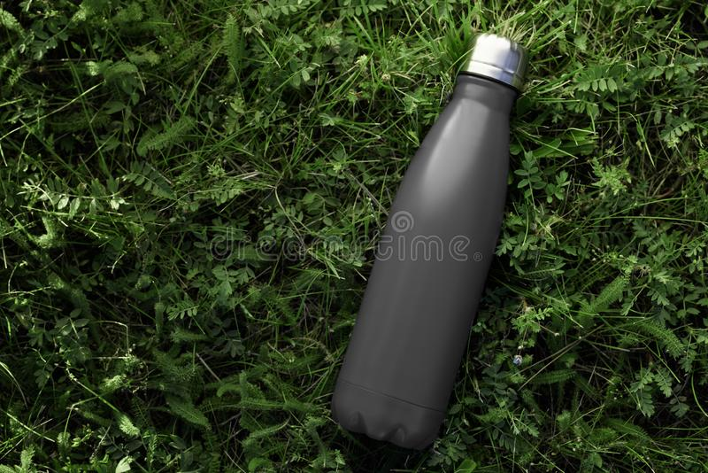
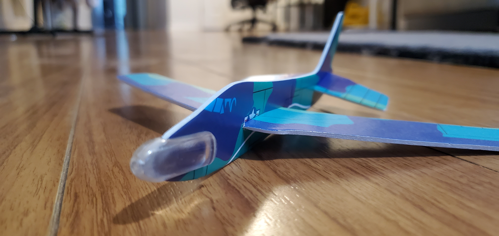

CASE STUDY
1:Test Image -
.jpg)
Output on Wolfram - Tennis Ball
Output on Microsft Azure - Tenis Ball
Results
Both platforms guessed it correctly!
2:Test Image-
.jpg)
Output on Microsft Azure - Banana
Output on Wolfram - Edible Banana
Results
Both indentified correctly. However, Wolfram was more specific.
3:Test Image- 
Output On Microsft Azure - No Input
Output on Wolfram - Water Bottle
Results
Wolfram is correct!
4:Test Image-
.jpg)
Output On Microsft Azure - Eye Glasses
Output on Wolfram - Monocle
Results
Microsoft Azure identified the image!
5:Test Image-

Output On Wolfram - Computer Mouse
Output on Microsft Azure - Computer Mouse
Results
Both identified the image correctly!
6:Test Image-
.jpg)
Output On Microsft Azure - No Input
Output on Wolfram - Laptop
Results
None of the platforms identified the image.
7:Test Image-
.jpg)
Output On Wolfram - No Input
Output on Microsft Azure - No Input
Results
I think it was too hard to identify a pilliow.
8:Test Image-
.webp)
Output On Wolfram - Pedometer
Output on Microsft Azure - No Input
Results
Wolfram was close but not exactly right.
9:Test Image- 
Output On Microsft Azure - No Input
Output on Wolfram - Mop
Results
None of the platforms identified the picture correctly.
10:Test Image-

Output On Wolfram - Ball Point Pen
Output on Microsft Azure - No Input
Results
Wolfram guessed the picture correctly!
Overall Conclusion!
Out of these 10 images. Wolfram guessed 6.5 images right! Microsoft Azure guessed 4 images correctly.